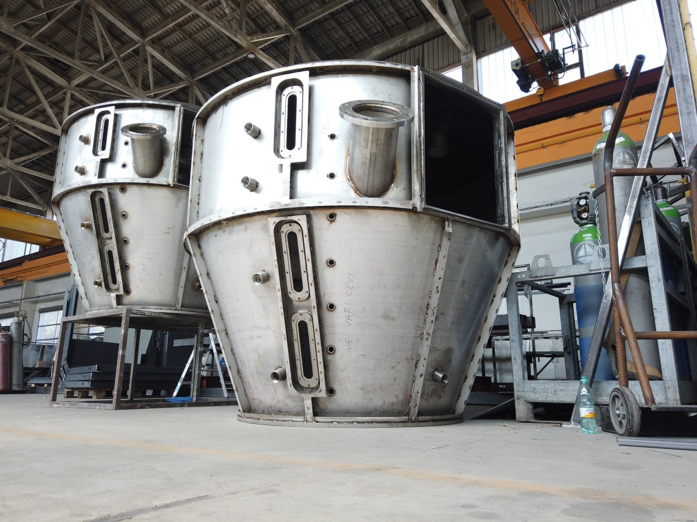
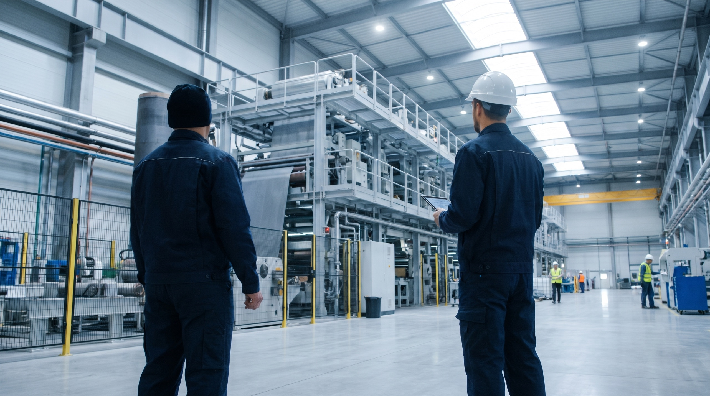

Zgodbapredanosti.
Zgodovina podjetja je zgodba predanosti poklicu. Od garaže na Zgornjem Plavžu do skupine Kolektor.
Delavnica v garaži
Vojo Jovičić je znanje pridobival v železarni in ga delil na jeseniški srednji šoli. Po tehtnem premisleku je ustanovil lastno obrtno delavnico na Zgornjem Plavžu.

Cesta železarjev
Ekipa se preseli v poslovne prostore na Cesti železarjev, kjer obrt s tremi zaposlenimi zraste v podjetje KOV d.o.o.

Certifikata EN 1090 in ISO 3834
S certifikatoma SIST EN 1090-1 (EXC 3) in SIST EN ISO 3834 smo pridobili pravico do označevanja jeklenih konstrukcij z oznako CE.

5000 m² novih površin
Obnovili smo območje stare hladne valjarne in žičarne ter se razširili na dodatnih 5000 m² sodobno obnovljenih površin.

25 let pisanja zgodbe
Uspešno podjetje je mozaik odličnih posameznikov in dobrih poslovnih partnerjev. Danes zaposlujemo preko šestdeset ljudi.

Kolektor KOV
Lastništvo prevzame skupina Kolektor, ki nadaljuje razvoj podjetja in širi njegove kapacitete. Podjetje se preimenuje v Kolektor KOV d.o.o.

Proizvodnja
Proizvajamo vrhunske izdelke zahtevnih poslovnih partnerjev. Program sega od izdelave jeklenih konstrukcij, varjenja barvnih in črnih materialov, strojegradnje in izdelave kompleksnih strojnih delov do projektiranja.
Bogat strojni park dopolnjujejo trdo delo, neustrašnost in znanje posameznikov, ki skrbijo za načrtovanje, izdelavo in montažo. Sistem spremljanja proizvodnje nam omogoča nadzor procesov, s čimer zagotavljamo kakovost.

Vzdrževanje
Kot zunanji izvajalci vzdržujemo proizvodne linije naših poslovnih partnerjev. Vzdrževanje zahteva ogled lokacije, skrbno načrtovanje in nadzor delovnega procesa.
Remont opravljamo v ozkih časovnih okvirih, ki jih postavljajo naročniki, zato je varnost na prvem mestu. Neslutene težave na proizvodnih linijah rešujemo v najkrajšem možnem času.

Razvoj
Svojo pozicijo krepimo z zanesljivostjo in skrbnim vodenjem celotnega procesa: projektiranje, razvoj, izdelava, montaža in vzdrževanje.
Zavidljive reference na domačem trgu širimo s projekti za tuje partnerje. Tretjino prometa predstavlja izvoz v Avstrijo, Italijo, Nemčijo in Rusijo.